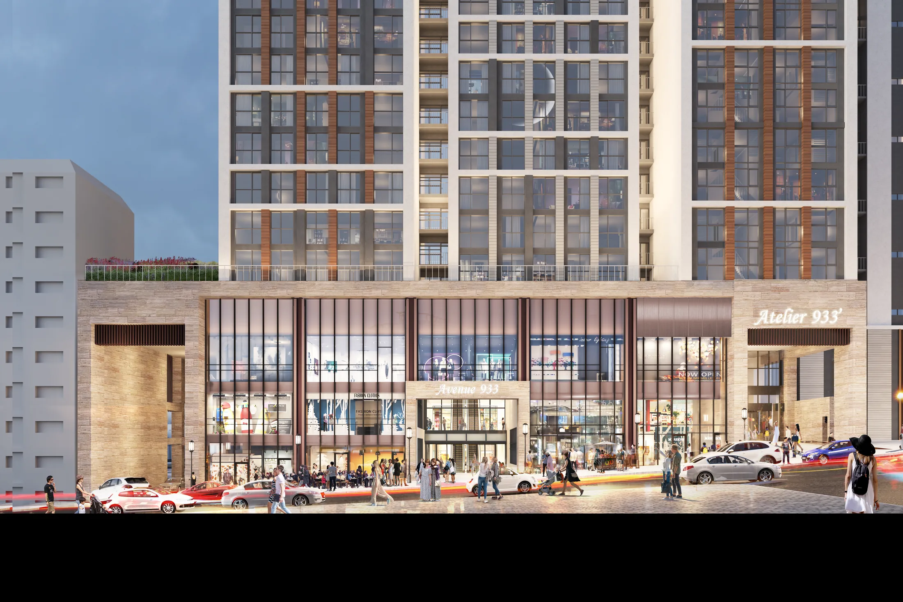
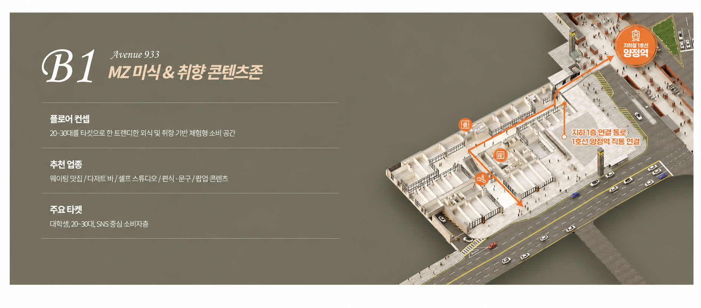
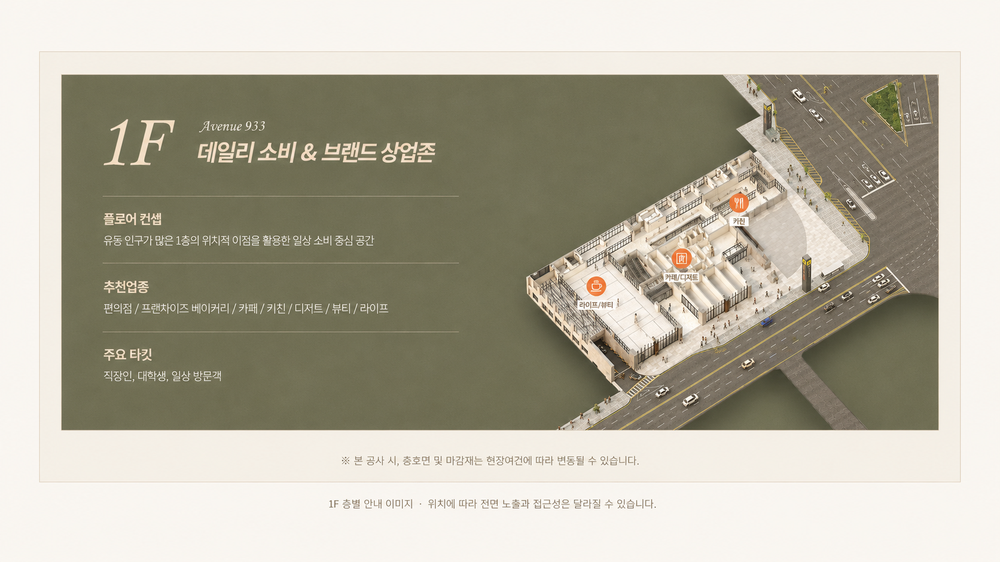
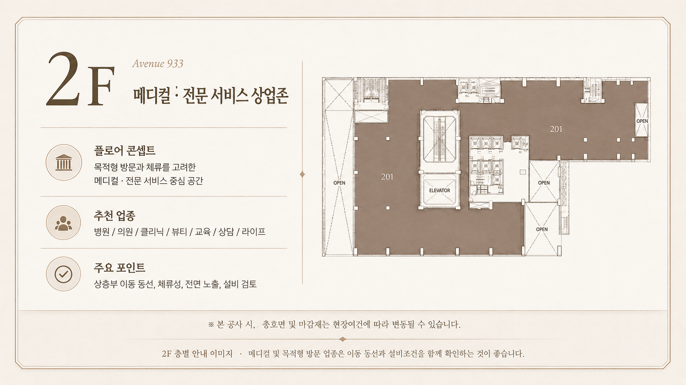

환자 접근
주차 후 엘리베이터, 층 안내, 호실까지의 이동 동선을 확인합니다.
양정역과 이어지는 상업공간을 상가분양·메디컬·병원개원 관점에서 보다 명확하게 살펴보세요.

좋은 상가는 숫자 하나로 판단하기 어렵습니다. 양정 아틀리에933은 양정역 연결, 주거 배후, 업무·행정수요, 층별 이동 동선과 호실별 가시성을 함께 비교해야 실제 운영 적합성이 보입니다.
특히 부산진구 병원개원이나 부산진구 메디컬 상가를 검토한다면 일반 상가와 다른 설비·환자 동선 기준을 별도로 확인하는 것이 중요합니다.

제공된 안내자료 기준 약 6만5천 세대 생활권과 약 5만3천 규모의 업무·행정수요가 안내되어 있습니다. 하지만 실제 상가 운영에서는 이 수요가 어느 시간대에, 어떤 목적으로 움직이는지가 더 중요합니다.
내과·소아청소년과·피부과·정형외과·치과·한의원·이비인후과처럼 진료과별 요구 조건이 다를 수 있습니다.
주차 후 엘리베이터, 층 안내, 호실까지의 이동 동선을 확인합니다.
급배수·환기·전기·소방 등 진료과별 필요한 조건을 점검합니다.
엘리베이터 규격, 복도 폭, 장비 반입과 유지보수 동선을 살펴봅니다.
상층부일수록 외부 간판과 공용 안내 사인의 역할이 중요할 수 있습니다.

양정역에서 이어지는 이동 흐름과 내부 상업시설 접근성을 중심으로 확인합니다.

자연 유입형 업종이라면 전면 폭, 외부 시인성, 출입구 위치를 함께 비교하는 것이 좋습니다.

병원이나 전문서비스처럼 목적형 방문이 많은 업종은 상층부 접근성과 안내 체계가 중요합니다.

역 연결과 층별 역할, 실제 호실 비교 기준을 확인해보세요.
자세히 보기 → 02 · YANGJEONG주거·업무·행정수요가 실제 고객 이동으로 이어지는 흐름을 살펴봅니다.
자세히 보기 → 03 · MEDICAL환자 동선과 급배수·환기·전기·장비 반입 조건을 정리했습니다.
자세히 보기 → 04 · HOSPITAL진료과와 환자 특성에 따라 달라지는 공간 조건을 비교합니다.
자세히 보기 → 05 · STATION양정역에서 호실까지 이어지는 실제 이동 동선을 확인합니다.
자세히 보기 → 06 · PROPERTY전면 폭, 코너, 가시성, 설비 조건을 운영 관점에서 비교합니다.
자세히 보기 → 07 · BUSAN MEDICAL실제 진료권과 주차 후 이동, 운영비까지 함께 살펴봅니다.
자세히 보기 → 08 · UNIT보유 목적에 따라 달라지는 호실 평가 기준을 안내합니다.
자세히 보기 →역에서 상가까지의 실제 이동 동선과 자신의 업종이 어느 층과 잘 맞는지부터 확인하는 것이 좋습니다.
급배수, 환기, 전기, 소방, 장비 반입, 환자 동선처럼 진료과별로 별도 확인이 필요한 조건이 많습니다.
진료과와 환자 특성에 따라 다릅니다. 목적형 방문이 많은 진료과는 상층부도 충분히 검토할 수 있습니다.
정확한 대수보다 차량 진입과 주차 후 엘리베이터, 상가까지의 실제 이동 편의를 함께 확인하는 것이 좋습니다.
아닙니다. 안내자료를 바탕으로 한 참고 정보이므로 실제 계약 전 최신 자료와 계약서 기준으로 재확인해야 합니다.
상가분양·메디컬·병원개원·직접 운영 목적에 맞춰 상담받으실 수 있습니다.